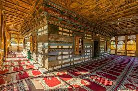

<div class="portfolio-single-load clearfix">
    <div class="custom-full-width-box">
        <div class="custom-container">
            <div class="custom-row align-items-center">
                <div class="custom-image-column">
                    
                </div>
                <div class="custom-text-column">
                    <h2 class="custom-heading">Chaqchan Mosque</h2>
                    <p class="custom-paragraph">
                        Situated in the heart of Khaplu, Chaqchan Mosque is a historic masterpiece of Islamic architecture dating back to the 15th century. With its intricately carved wooden beams, ornate frescoes, and tranquil courtyard, the mosque is a testament to the region's rich cultural heritage and artistic traditions. Visitors can admire its exquisite craftsmanship, learn about its fascinating history, and experience the spiritual ambiance of this sacred place of worship in Gilgit-Baltistan.
                    </p>
                </div>
            </div>
        </div>
    </div><!-- .custom-full-width-box end -->

</div><!-- end single-project -->
